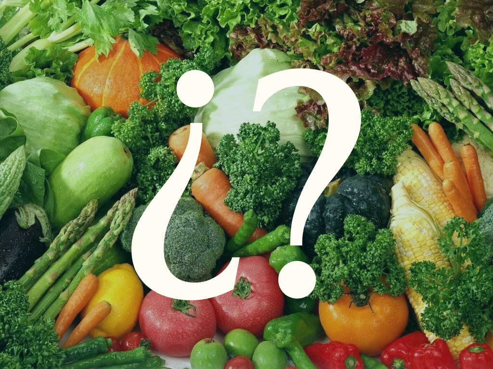
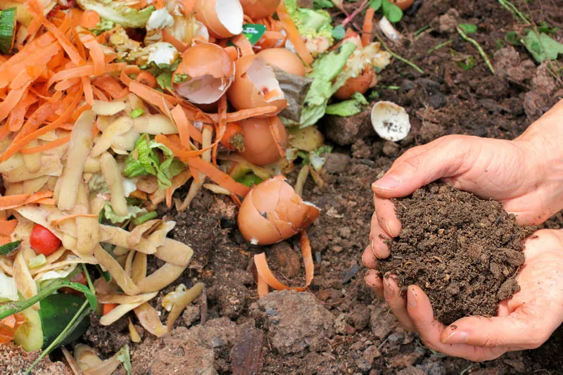

BLOG
Este es un espacio en el que les compartimos consejos, novedades y tendencias útiles para el cuidado de tus plantas. Además, vos podes sumarte y compartirnos contenidos que creas relevantes para difundir entre nuestra comunidad.


CALENDARIO DE SIEMBRA
¿No estás segura/o de cuándo sembrar tu huerta? Te dejamos un calendario de siembra detallado con especies de todas las estaciones, de primavera-verano y de otoño-invierno. También las formas de siembra de cada una y días para su cosecha.